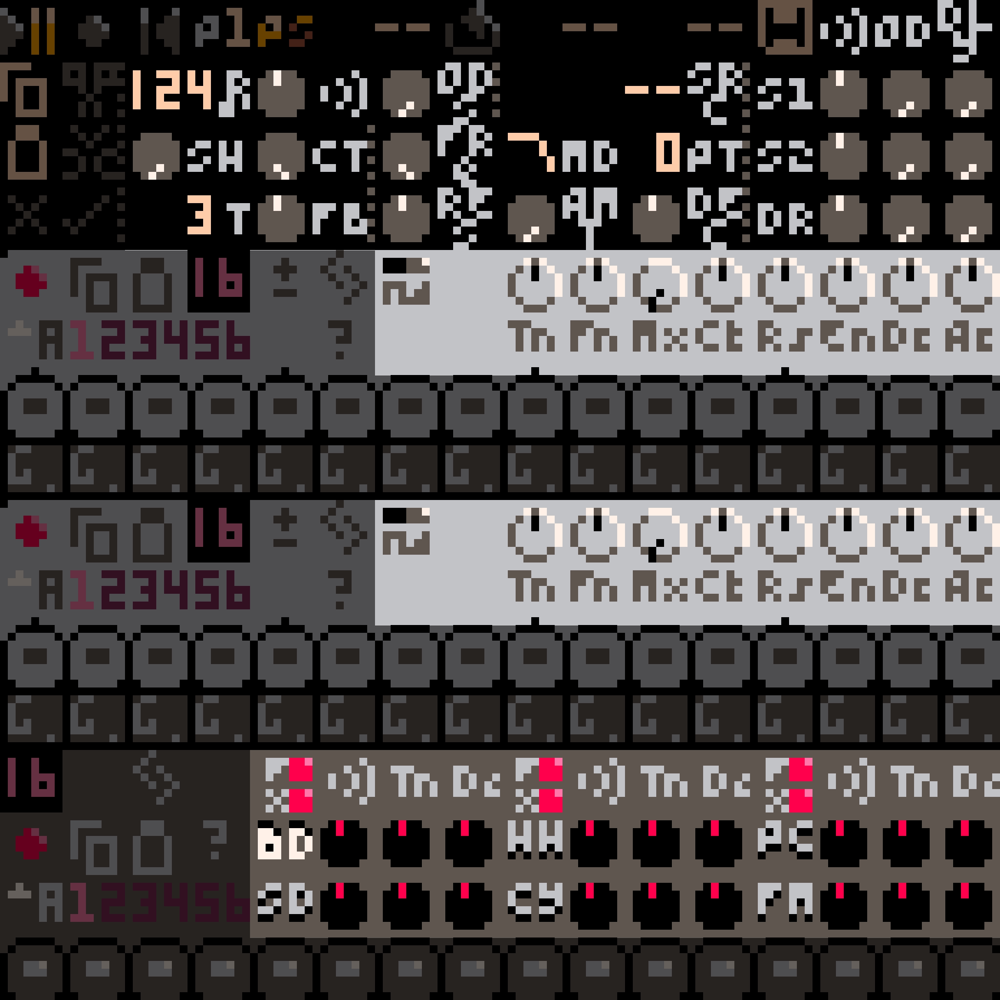

Introduction¶
RP-8 is a Pico-8 demake of Propellerhead Software's ReBirth RB-338. Like the original, it provides two synth voices, drums, pattern-based sequencing, effects, a pattern mode for immediate hands-on control, and a song mode for recording music. Unlike the original, the audio output is crunchy 8-bit 5.5kHz mono sound, and the user interface is rendered in 16 colors at a chunky 128x128 resolution.
This guide is written in two main parts: a tutorial section that walks you through writing a short song
in RP-8, and a reference section that explains the different main components of RP-8 in more detail. If
you ever get lost, remember that you can toggle tooltips on and off with t, and access keyboard shortcut reminders
with h.
If you are reading the downloadable version of this guide, an online version is also available with a better table of contents and a search feature.
Thanks for trying RP-8, and please feel free to get in touch!
Tutorial¶
This document will walk you through writing a simple song in RP-8: everything you need to know to make your own music. There are two main things you'll learn: how to compose music in pattern mode, and how to arrange it in song mode. This workflow closely resembles how I begin new tracks in RP-8, and it might be a good starting point for you too.
If you have never used ReBirth before, I highly recommend you follow this tutorial, as it introduces several important ideas that are foundational to how RP-8 works. If you have used ReBirth, it's still probably a good idea to at least skim the tutorial, since RP-8 does not function identically to ReBirth.
Let's begin!
Pattern Mode: Composing and Experimenting¶
In RP-8, you compose music by writing patterns, which are sequences of up to 16 notes that you can play back in various orders to make songs. RP-8 starts up in pattern mode, which gives you direct control over every aspect of what RP-8 does, and is perfect for basic composition tasks and experimenting with sound design.
Make A Drum Pattern¶
Drums are never a bad place to start, so let's make a drum pattern. The drum machine is at the bottom of the screen and looks like this:

At the bottom of the drum machine are the step buttons, which control what kind of sound (if any) plays on each step. Click a few step buttons - you'll see that they light up - then click the play button at the top-left of the screen. You should hear a bass drum playing the steps that you clicked.
You may have noticed that the buttons can light up in different colors. For the drum machine, red and yellow are different variations of the sound, and the intensity of the light indicates the volume of the hit (brighter means louder). You can click a button multiple times to cycle through the options.
You have probably also noticed that the BD button on the drum machine is lit. There are 5 other similar buttons, each representing a different drum. If you click one, you'll see that the steps get cleared: this is because you're now editing a different drum in the same pattern.
TASK: Make a drum pattern using all 6 drums.
Make A Synth Pattern¶
You should be all set for drums at this point, at least for one bar. How about a melody or a bassline? For this you'll probably want to use one of the two synths, which look like this:

Like the drum machine, these have step buttons, but below the step buttons are note controls, which control what pitch the synth plays at each step. You can drag up and down on the note controls to change which note plays on each step.
TASK: Try making a one-bar melody.
Like the drum machine, the step buttons light up in different colors, but the meaning of the red and yellow colors is different. Red steps play notes as normal, but yellow steps are slides. Slide notes are longer and allow you to smoothly slide between pitch on adjacent steps. Dimmer steps are played normally, brighter steps are accented. Accented steps are louder, with shorter filter decay times but greater filter modulation. The amount of this effect can be controlled with the accent knob.1
Name and Save Your Song¶
Now that you've done some work, it's probably good to save your song so you don't lose it.
TASK: Press f or click on the disk icon to bring up the file menu, then use the arrow keys to navigate down to
Rename Song, then press enter to open the song rename screen.. Enter a name for your song, and then (once you are
back at the main RP-8 screen) press s to save your song. The song has been saved to the folder that RP-8 is in. To
open this folder, you can go back to the file menu with f and select Open Folder.
You can also press p to quicksave your song to the clipboard. This is useful for quickly checkpointing your work.
RP-8 does not have undo, so use this feature often, especially before you make changes you're not sure about! You can
press o to quickload from the clipboard.
Check Out the Integrated Help¶
By now you have probably noticed that RP-8 uses hotkeys for many features. You can press h at any point to view a
help screen with a list of hotkeys (and the URL to this user guide).

You can also press t in the main view to toggle tooltips on and off.
TASK: Try turning on tooltips and checking out some of the control labels.
Change the Sound¶
Ok, let's get back to making music. You've made a couple of loops, but you might find that the overall sound is a little ... uninspiring. The good news is that you can make it better! RP-8 is packed with sound design controls.

Both the synths and the drum machines have tons of knobs that affect the character of the sounds that they make, and the section at the top of the screen lets you mix and apply effects to these sounds. Use can use tooltips for more information on what each knob does.
TASK: Play around with the sound and dial in something you like!
Make More Patterns¶
RP-8 supports multiple patterns to allow for variations and longer phrases. You can switch between patterns using the pattern and bank selector buttons:

There 8 banks (A-H) of 6 patterns each. You can drag on the bank selector to change banks, and click the number buttons to pick a pattern in the bank. If RP-8 is paused, the pattern will change instantly, if it is playing, then the pattern will change at the beginning of the next bar.
If you get lost and can't figure out which bank the current pattern is in, you can press b at any time to jump each
bank selector to the current pattern's bank.

If you want to make a new variation of a pattern, you can use the pattern copy/paste buttons on the synths and the drum machine to duplicate a pattern to a new slot for further editing. You can copy patterns between the two synths, but not between the synths and the drum machine.
TASK: Make a few more patterns: maybe a bassline on one synth, a few bars worth of melody on the other synth, and one or two drum loop variations on the drum machine.
If you're having fun - keep going! It'll be helpful to be fairly comfortable in pattern mode before moving on to arrangement in song mode.
Song Mode: Arranging and Automating¶
Sometimes one bar of music just isn't enough. That's when it's time for song mode, which allows you to arrange multiple
bars of music and record control movements. You can switch into song mode using the mode selector button, or by
pressing m.

The most important change from song mode to pattern mode is that you are no longer in direct control of the sound design or of which patterns are playing. (Note that this does not include pattern contents, i.e. notes and steps. These are shared with pattern mode, and changing them still works exactly like pattern mode.) Instead, the RP-8 sequencer controls these, and any changes you make will be lost until you take special steps to record them. The sections below explain three different recording methods you can use.
Don't worry if this doesn't make total sense yet. Let's start arranging our song, and everything should become clearer in the process.
Choose A Loop Length¶
In song mode, you'll find song position and loop controls at the top of the screen. Each control's value is measured in bars:

These controls are essential in song mode. Not only do these controls let you choose which part of the song you are play back, but the loop controls also act as a "selection" in the song: there are many operations in RP-8 that perform an operation only on the bars contained in the current loop.
TASK: Since we are starting a new song, let's set our loop to start at bar 1 and be either 4 or 8 bars long. It's
okay to start at bar 1 even if we think we might want to add an introduction, since RP-8's editing tools provide ways
to move bars around later. If you forget which control is loop start and which is loop length, you can turn on tooltips
with t for a reminder.
Copy A Loop From Pattern Mode¶
You've probably noticed that, in song mode, all your sound edits from pattern mode have been lost. Instead of recreating them manually, let's copy them over. You'll that there are copy/paste buttons not just on each device, but also near the top of the screen:

We can use these buttons to copy information about all the sound controls.
TASK: Switch back to pattern mode (by clicking the mode button or pressing m) and click the copy button, then
switch back to song mode, and click the paste button. Your loop should now be filled with the same control
configuration you had in pattern mode!
Recording, 3 Ways¶
We're now going to use three different recording methods to build up some changes and structure in your loop.
Change the Sound (Again)¶
This section demonstrates the first recording method: change-and-commit.
Try playing your new loop. (Make sure the loop enable control is turned on.) Now try changing some of the controls. You'll notice that your changes look like they stay in effect ... until you pause playback. Then all your changes are reset. You may also have noticed that the dark red record button next to the play button turns yellow when you start making changes. What's going on here?
When you start making changes, RP-8 notices that you've departed from the recorded sequence, and turns the record light yellow to warn you. Any controls you have changed will stay where you left them, but any controls you have not touched will stay under sequencer control. When you pause playback, RP-8 puts all controls back under sequencer control and resets their values.
But what if you like your changes?

Whenver you have uncommitted changes (i.e. the record button is yellow) the change discard/commit buttons will light up. The discard button clears your changes, just like stopping playback. If RP-8 is playing, control values will reset at the start of the next bar, if it is paused, they will reset immediately. The commit button, on the other hand, will keep your changes: each control you have modified will now keep its current position everywhere in your loop.
TASK: Try making some more changes to the sound in your loop. Then use the loop controls to select one or two bars within your loop, and change the sound only in those bars. Set your loop back to its original length again and listen to your new control automation!
Automate the Sound¶
This section demonstrates the second recording method: realtime recording.
The technique above is easy, but only lets you make changes in full-bar chunks. If you want a nice filter sweep, you'll
have to use realtime recording instead. When you turn on record mode, by clicking the record button or pressing r,
the record button will light up bright red, and RP-8 will begin immediately recording all control changes you make to
the song.
If looping is enabled, RP-8 will forget about all changed controls each time playback loops. This allows you to record automation for multiple controls in the same recording session, and means that you don't have to quickly hit stop to avoid recording over the start of your loop.
When you pause playback, RP-8 will automatically exit record mode. You can also exit record mode by clicking the record button.
TASK: Press p to quicksave your song in case something goes wrong or you record something you don't mean to.
TASK: Go to the beginning of your loop, enable recording, and hit play. Move the synth filter cutoff knobs. Each time the song loops is a new take, so keep trying as long as you like!
Sequence Your Patterns¶
This section demonstrates the third recording method: step recording.
We're now going to record some pattern changes in your loop. You could do this using either of the previous two methods, but for pattern recording you often want to set patterns across many bars quickly. This is easy to do with step recording. When record mode is active, any changed controls are written to any bar you visit, even when paused. This means that you can enable recording, make some changes, and step forward or backward in the song to write those changes to each new bar.
TASK: Press p to quicksave.
TASK: Sequence all the pattern changes you want in your loop! Go to the first bar of your loop and enter record
mode. Then select the patterns you want to play on that bar. Then use the the . key to move one bar forward and
select the patterns you want to play on that bar. If you want to keep the same patterns for multiple bars, you can just
skip through them, you do not need to click the pattern buttons again. If you make a mistake, you can backtrack with the , key to fix it, or if you make a big mistake, press o to quickload your last checkpoint.
Note
You can also use the mouse to drag the song position control to navigate while recording is active, but, if you try this, use extreme care. Every control modified in the current recording session will be written to every bar you visit! You can easily overwrite many bars worth of sequencer data if you're not careful.
Nice work! You now have a fully-sequenced loop. Let's finish this all off by copying your loop and making a variation.
Duplicate Your Loop¶
To make major changes to the arrangement, we need to use the song editing tools near the top of the screen. Two of these, copy and paste, should be familiar from earlier, since we used them to initialize our loop from patern mode.

All of these features use the current loop as their active selection.
TASK: Click the copy button to copy the current loop. Then click the insert button, which will insert the copied bars into the current loop, moving the current loop and all later bars back to make space. You have just created a duplicate of the loop! Keeping the loop length the same, advance the loop start to the end of the current loop, so we can start editing the duplicated content.
TASK: Use what you have learned so far to write a B section to this tiny song.
Create an ABA Structure¶
Let's do one more sequence edit, to add a copy of the original loop at the end of your B section, for a very brief ABA structure.
TASK: Move the loop back to the beginning of the song, and copy your original loop. Then advance your loop point just past your B section and click paste.
Export To Audio¶
All right, we're ready to finish this off! Now we just need to use the .WAV export feature to render your song to audio. There are two steps: first, prep your song for export by creating a few silent bars at the end. Then just enable export and play your song from the start.
TASK: Add some silent bars at the end of your song. Move the loop past the end of the song and use change+commit recording to disable all three instruments for this section (click the red circle on the left side of the instrument to toggle whether it is enabled). Leave this loop enabled at the end of the song - you want to "trap" the playback position here after export so you don't get unexpected sounds at the end of your recording.
TASK: Go back to the beginning of your song, and, while paused, press e to enable export. Then play your song
to the end, and press e when done. You'll see a new .WAV file on your desktop containing your exported audio.
Closing Thoughts¶
Congratulations! You've just made a very short song with RP-8. Go make more!
For more information on how the devices work and what specific controls do, see the [Reference] section. For quick
reminders in RP-8, remember that you can turn on tooltips with t or access help with h.
If you get stuck or encounter what seems to be a bug, please get in touch.
-
RP-8 tries to approximate the accent behavior of the TB-303, but it's a loose resemblance. ↩
Reference¶
Basic Usage¶
Most controls on the screen respond to one of a small number of gestures: clicks, vertical drags, and double clicks. Generally, clicking either activate a button's effect or toggle a button's state, dragging will alter the value of a knob or a numeric control, and double-clicking will reset a knob to its default value. There are also a few buttons for manipulating pattern data that respond to vertical drags (the transpose and rotate pattern buttons).
When you click or drag a control, it becomes highlighted in blue. This indicates that the control is now selected, and will respond to control-specific keyboard commands, such as the up and down arrow keys for altering step, note, or knob values. If a control does not get a blue highlight, that means it is disabled in the current mode -- for example, you cannot change the song position in pattern mode.
Transport¶

The transport provides control over RP-8's playback and overall behavior. In pattern mode, you can start or pause the sequencer, change between pattern mode and song mode (see Modes), switch sequencer pages (see Pages), and access the file menu (see Loading and Saving). In song mode, the position control, loop enable/start/length controls, and record button will also become available.
To change the numeric controls, click and drag up/down to increase/decrease the values, or use the arrow keys.
The rewind button will jump to the start of the loop with a single click, or to bar 1 with a double click.
Modes¶
RP-8 has two modes: pattern mode and song mode. All the same devices and sound creation machinery are available in both, however, they have different purposes. Pattern mode gives you immediate direct control of every parameter, so it is ideal for learning, experimentation, and coming up with new ideas. Song mode records enables several features for recording, editing, and replay of parameter changes, and so is best for when you want to start recording multi-bar sequences and complex automation.
Pages¶
The RP-8 UI also has two sequencer pages, each accessible in both pattern and song modes. You can toggle between them
with the tab key, or by clicking the P1 / P2 button near the top of the screen. Each page shows a different set
of pitch controls for each pattern.
RP-8 starts on page 1. This page lets you control the pitch of oscillator 1 on both synths, and shows the drum pattern step buttons.
Page 2 shows secondary / relative pitch controls for all three devices. These controls let you detune each drum (on the drum machine) or the second oscillator (on each synth) relative to the main pitch for each device. For the synth, this means you are detuning oscillator 2 relative to oscillator 1. For the drums, you are detuning each drum relative to whatever pitch is determined by the sound controls. (The base pitch of each drum with all knobs at their default positions is usually G in some octave.)
Loading and Saving¶
To load a song, drag the song file onto the RP-8 window. Alternatively, you can copy the song data to your clipboard,
paste it into RP-8 (using ctrl-v on Windows/Linux or cmd-v on MacOS), and use the o hotkey to load from the
clipboard.
To save songs, you can use the file menu.

This screen allows you to name your song and save it, as well as open the RP-8 data folder - which, depending on your OS
and how you are running RP-8, may be difficult to find otherwise. Use the up and down arrow keys to select an option,
then the enter key to act. You can access this menu by clicking the disk icon by the transport controls, or by using
the f key.
Arrangement Editing¶
Below the transport, on the left side of the screen, are buttons for editing song arrangements. Copy and paste are available in all modes, the rest are available in song mode only.

The buttons act as follows:
Copy sequence. Copies the current pattern and control settings (if in pattern mode) or loop, including all automation (if in song mode).
Cut sequence. Acts identically to copy sequence, except it removes the current loop's bars from the song. Later bars are moved up to fill the empty space.
Paste sequence. Fills the current loop with the last copied sequence. If the copied sequence is shorter than the current loop, it is repeated to fit. If the copied sequence is longer, it is truncated. Sequences copied from pattern mode are treated as one-bar loops with no automation, and sequences pasted into pattern mode use only the first bar (and no automation).
Insert sequence. Inserts new bars into the song to fill the current loop, so that the loop's old contents are now located just after the loop. The new bars are then filled with the copied sequence, just as with paste.
Commit overrides. Commits the values of all currently-overridden controls to the loop. This will overwrite any automation for those controls.
Clear overrides. Clears all control overrides and returns any overridden controls to their values as recorded in the song. This action takes effect at the start of the next bar.
There are also a two keyboard-only arrangement commands. [ acts like the paste button, but applies only to the
currently-selected control. This allows you to selectively transfer automation for only some controls. ] also acts
like the paste button, but does not transfer pattern selections (transfers sound controls only). This lets you copy
sound design from one part of your song to another without overwriting the pattern arrangement.
Tempo, Shuffle and Volume¶
The tempo control, marked with a little note symbol, displays the current tempo in beats per minute. RP-8 supports tempo settings from 60 to 188 bpm in 1 bpm increments. Tempo can be automated over a song just like any other control.
Shuffle, marked with SH, offsets the position of every other 16th note step - pushing each one later. For triplet swing, set shuffle about 2/3 of the way to its maximum position. Shuffle is applied to all instruments.
The volume control, marked with a small speaker symbol, controls the level of RP-8's output. RP-8 applies soft
saturation at the output to avoid clipping, so you can also use this as a second distortion effect on the main mix. You
can separately control the level of Pico-8's main output via the pause menu, accessed with enter: the volume control
is located in a submenu under the Options heading.
Devices¶
Sound in RP-8 is generated by its 3 devices: two identical 2-ocillator synthesizers loosely inspired by the Roland TB-303 and one drum machine that is even more loosely inspired by the Roland TR-808. These devices are explained in more detail in their own sections below.
In general, you should use the synthesizers for tonal elements in your songs, like melody or bass lines, and you should use the drum machine for rhythmic elements. However, all the drums have a tuning adjustment knob, and many of the sounds can have a strong tonal character, so stay open-minded!1 Each device is controlled by a pattern sequencer, which plays back sequences of notes or drum hits from a user-programmable bank of patterns. Patterns are 16 step (1 bar) series of notes or drum hits, and are the building blocks of music in RP-8.
RP-8 also has effects units and a mixer, whose controls are all located in the transport and mixer section at the top of the screen.

Audio Signal Flow¶

Each of the two synthesizers and the drum machine is routed into its own overdrive unit. The overdrive outputs are sent to the mixer, which separately mixes these voices into a dry signal and a delay send signal. The delay send signal is sent to the delay effect, whose output is then mixed with the dry signal and sent to the compressor. Finally, soft saturation is applied to the signal before it is output to the speaker.
The drum machine and the pattern filter can vary this routing a little bit, see their sections for more details.
Device Pattern Controls¶
There are several controls that are shared by both the synths and the drum machine, although with slightly different layouts.
A. Pattern length. This setting controls how many steps are played each time the pattern repeats, and is stored separately for each pattern. It can be used to create interesting rhythmic effects when set to values smaller than 16, since the pattern will repeat starting at different points in each bar. With patterns shorter than 16 steps, where the pattern starts in each bar is fixed and cannot be changed. On the drum mahcine, each drum can have a different value.
B. Pattern transpose. Dragging up and down on this button allows you to transpose the notes in the pattern. On the
drum machine, it is only available when viewing sequencer page 2, when the drum machine step buttons are replaced with
interval controls, and it applies only to the selected drum track. shift+up and shift+down when this button is
selected allows transposing by octaves.
C. Pattern rotate. This function is only available on the drum machine. Dragging up/down on this control rotates the steps for the selected drum in the current pattern right/left on the step grid.
D. Device enable. This button controls whether the device's sequencer is active. When inactive, the device will not play any new notes. If you change this value in the middle of a bar, it will take effect at the start of the next bar.
E. Pattern copy. This button copies the currently selected pattern. The two synths share a copy buffer, allowing you to copy patterns between the synths. The drum machine has a separate copy buffer.
F. Pattern paste. This pastes the copied pattern into the currently selected pattern.
G. Pattern bank select. Dragging up and down on this control lets you move through the 8 pattern banks. You can
also press b to jump each device's bank selector to the bank containing the currently selected pattern.
H. Pattern select. These buttons select which pattern is currently playing/active. Any selections made in the middle of a bar will take effect at the beginning of the next bar.
Synths¶
The two synthesizers are two-oscillator paraphonic synths with 24 db/octave lowpass filters and built-in step sequencers. (Paraphonic means, in this case, that the oscillator pitches can be sequenced separately.) The filter cutoff frequency is modulated by a simple one-stage envelope.
Sound Controls¶
There are several sound controls on the synth: a waveform selector and a bank of knobs.
Waveform selector. The waveform selector allows you to toggle between a square wave and a saw wave.
Tn. Synth tuning in a +/- 12 semitone range.
Fn. Fine tuning of the second oscillator in a +/- 1/2 semitone range.
Mx. The mix between oscillators 1 and 2.
Ct. Filter cutoff.
Rs. Filter resonance.
En. Filter envelope depth.
Dc. Filter envelope decay.
Ac. Filter accent depth.
Sequencing¶
The synth is sequenced using the standard step buttons, with 5 different step types (off, dim red, bright red, dim yellow, bright yellow). Bright steps are accented, dim steps are unaccented. Red steps are played normally, yellow steps are slides. A slide step will slide smoothly to the next step's pitch, and will prevent any envelopes from retriggering on the next step.
The step pitch controls are below the step buttons. On sequencer page 1, these control the pitch of oscillator 1. On sequencer page 2, they control the coarse tuning of oscillator 2 relative to oscillator 1.
Drum Machine¶
The drum machine offers six different drum tracks. Each track offers two different drum sounds, each at two different volume levels. Sound selection is indicated by step color: one sound is red, one sound is yellow. Sound intensity is indicated by button light intensity: brighter steps are louder, or accented.
Each sound has two different controls: Tn (tune) and Dc (decay). These controls work slightly differently for each sound. Each track also has its own step pattern with its own length, and you can use step patterns of different lengths to create polyrhythms. The drums can be transposed by semitone in the second sequencer page.
By default, all of the six tracks are processed through the overdrive and delay effects, as well as the pattern filter if its source is set to DR. You can cycle through the FX button settings for each pair of tracks to turn on or off the effects for each track separately. When effects are bypassed for a track, that track is not processed by overdrive, not processed by the pattern filter (if the pattern filter is set to DR mode), and not sent to the delay send bus.
Bass Drum (BD)
The bass drum sounds use simple waveforms that start out at high volume and pitch, then rapidly decay to low volume and low pitch. The Tn knob controls the starting pitch, and the Dc knob controls now rapidly the volume and pitch decay. When not transposed, the ending pitch is approximately 49 Hz (G1). Transposing the drums affects both the starting and ending pitch.
Red sound: This is an approximately 808-style bass drum using a sine wave and simple exponential envelopes.
Yellow sound: This is closer to a 909-style bass drum. It uses a triangle wave, and the exponential envelopes are limited at the start of the drum hit, in order to approximate a compressed sound.
Snare Drum (SD)
The snare drum mixes a sine wave exponentially decaying in pitch and volume, like the bass drum, with exponentially decaying noise. This whole signal is then sent through a gentle highpass filter. The Tn knob controls the pitch of the sine wave, and the Dc knob controls the decay time of the envelopes.
Red sound: This is a short, snappy, noisy snare drum. The tonal sine wave component is fairly quiet, and the decay times are relatively short.
Yellow sound: This is a slightly heavier, darker snare. The tonal component is louder, the decay is longer, and the highpass filter is set slightly lower to retain more midrange frequencies.
Hihat (HH)
The hihat is a short burst of noise, mixed with several high-pitch detuned square waves at inharmonic frequency ratios. All of these are highpass filtered, and decay exponentially in volume. The Tn knob controls the pitch of the square waves, and the Dc knob controls the decay time. Both closed and open hihats are on this track, so playing a closed hihat will cut off an open hihat sound (and vice versa), allowing you to achieve a classic hihat choke effect.
Red sound: This is a closed hihat with shorter decay.
Yellow sound This is an open hihat, with a longer decay.
Cymbal (CY)
The cymbal sound is generated identically to the hihat (HH) sound, but this track is tuned for longer decay times and slightly higher pitches. The knobs work identically to the hihat knobs. Like the hihats, the cymbals will mute each other - this is not a typical effect, but try it out and see what happens!
Red sound: This is a cymbal with a shorter decay, like a ride.
Yellow sound: This is a cymbal with a longer decay, like a crash.
Percussion (PC)
This sound is synthesized identically to the bass drum (BD), but at higher pitches and with shorter decay times. By changing the tuning you can create sounds similar to toms, congas, rimshots, and more. Play around and see what you get!
Red sound: Same as BD.
Yellow sound: Same as BD.
FM (FM)
This is an FM sound made from two sine wave operators. You can use this to make metallic or other tonal percussive sounds. The pitches of each operator remain constant during each drum hit, but both the volume and the amount of modulation decay exponentially. The Tn knob controls the operator frequency ratio, and the Dc knob controls the envelope decay times.
The frequency ratios range from 1/4 (at the bottom end of the knob range) to 4 (at the top end of the range). Each increment of 32 in the knob value doubles the frequency ratio, so the default position of 64 corresponds to a frequency ratio of 1, and Tn knob values that are multiples of 8, 16, or 32 will produce less dissonant sounds. Try the shift+up arrow and shift+down arrow hotkeys to step through Tn knob settings in steps of 16.
Red sound: Light modulation intensity, producing cleaner, simpler sounds.
Yellow sound: Heavy modulation intensity producing harsher, more complex sounds.
Effects¶
RP-8 contains several effects to help shape the sound of the synths and drum machine. Please refer to the audio routing diagram from the [Audio Routing] section for more information.
Overdrive
There are three overdrive units, one for each of the two synths and for the drum machine. Each one independently distorts the audio for its device. The OD knobs in the mixer section control the intensity of the overdrive effect for each device, and the ODS knob (OverDrive Shape) controls the tone and color of all three overdrive units. Higher values produce thinner, scratchier overdriven tones with more odd harmonics.
Delay
The delay unit is a tempo-synced digital delay on a shared send bus. The delay times can be set in 16th notes (shown as number of 16th notes, 1-16), 16th note triplets (shown as 1T-16T), or dotted 16th notes (a number of 16th notes plus a 32nd note, shown as 0D-15D). The FB control controls the amount of delay feedback. There is a small amount of highpass filtering in the delay feedback loop so the delayed sound does not become too muddy.
Pattern Filter
The pattern filter is a 2 pole state variable filter with lowpass and bandpass modes. It differs from the other effects in that it can take its signal from several possible different sources. These are controlled by the SRC control. The possible sources are - -, or disabled, S1, S2, and DR, for the synths and the drum machine, and MA, for the main audio output after the mixer.
The MD control selects the filter mode: lowpass (shelf shaped) or bandpass (peaked). FRQ controls the cutoff frequency, RES the resonance, PT selects the filter pattern, and AMT and DEC affect how that filter pattern is applied.
The filter patterns control a filter modulation envelope. Each pattern is a different sequence of triggers of different intensities and timings. Different patterns have different lengths: some are 16 steps, and so line up neatly with the bar length, but other patterns are odd lengths that can help you create complex rhythmic effects. The AMT knob controls how strong the pattern triggers are: if the knob is all the way up, the strongest triggers will always bring the filter up to its maximum frequency (at least momentarily). If the knob is all the way down, the pattern will have no effect. The DEC knob controls the filter envelope decay time.
Compressor
The compressor is applied last of all RP-8's effects. There is only one control, the CT knob, which controls the compressor threshold. By default, the knob is all the way up, which means that the compressor will rarely have any effect. Reducing the compressor threshold should help make your song sound more even in volume, and should help your drum sounds and synth sounds fit together better. There's just one knob - try adjusting it and see if you like the results!
Technical details: this compressor uses linear scaling (not logarithmic) with a hard knee, a fixed ratio of 4, and fixed attack and release times of approximately 2.5ms and 60ms, respectively.
Keyboard Controls¶
You can press h at any time to get a list of these shortcuts in RP-8. If keyboard shortcuts appear to not be
working, check to see if you have caps lock enabled: these shortcuts only work with caps lock off.
All Modes
| key | action |
|---|---|
t |
toggle tooltips on/off |
s |
save song to RP-8 folder and to clipboard |
o |
load song from clipboard |
p |
save song to clipboard only |
tab |
switch sequencer page |
space |
toggle play/pause |
m |
toggle song/pattern mode |
e |
stop/start exporting audio |
b |
change each bank control to the current pattern's bank |
f |
open the file menu |
up |
increase selected control one step |
down |
decrease selected control one step |
shift+up |
increase selected control multiple steps |
shift+down |
decrease selected control multiple steps |
left |
go to previous pattern step |
right |
go to next pattern step |
0-4 |
on pattern buttons: set step type |
Song Mode Only
| key | action |
|---|---|
backspace |
rewind to beginning of loop (single tap) or bar 1 (double tap) |
l |
toggle loop on/off |
r |
toggle recording on/off |
x |
clear control overrides |
c |
commit control overrides to loop |
[ |
paste to selected control only |
] |
paste sound only (controls but not pattern selections) |
, |
previous bar |
. |
next bar |
-
TR-808 bass drums with long decay times are often used as bass sounds. The FM and percussion tracks of the drum machine can also easily be used as additional tonal voices. ↩
Contact¶
If you have thoughts, feedback, ideas, bug reports, or if you would like help, you can reach me via Itch, the RP-8 Discord, or your favorite ActivityPub service.